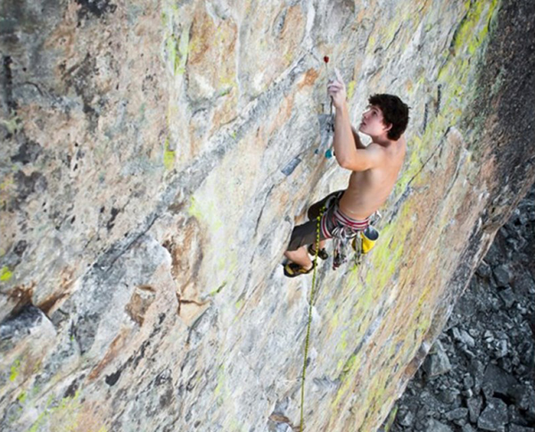
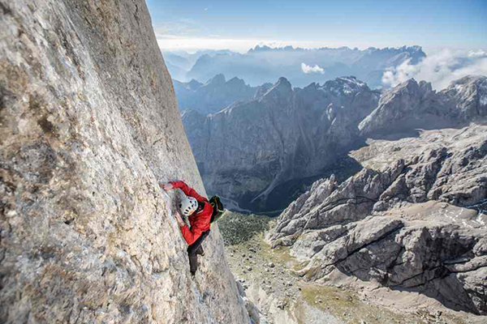
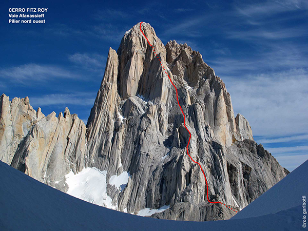
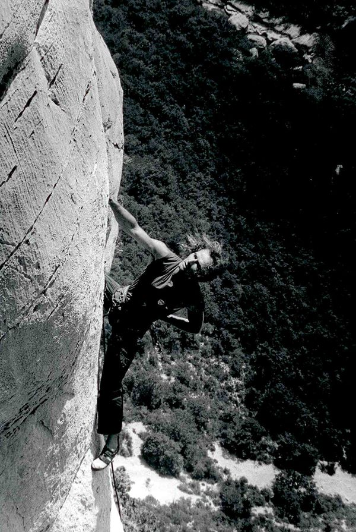

Le solo intégral
A la vie, à la mort...
L'escalade en solo intégral est un type d'escalade libre et en solitaire, dans lequel le grimpeur n'utilise aucun système d'assurage (ni corde, ni équipement de protection), se fiant uniquement à sa capacité à ne jamais chuter.
À la différence de la pratique de bloc, l'escalade en solo intégral, qui s'effectue au-delà d'une hauteur de sécurité, entraîne toujours des blessures graves ou la mort en cas de chute et nécessite donc un solide équilibre moral et nerveux.

Caractéristiques
Derrière l'exploit, une longue préparation, parfois sur une année, permet de le réaliser notamment avec des repérages. Certains grimpeurs ont une connaissance parfaite de la voie, pour l'avoir parcourue plusieurs fois, avec un enchaînement des longueurs sans interruption privilégiant l'esthétique de l'escalade et des mouvements.

D'autres grimpeurs de l'élite mondiale y exposent « une philosophie de l'escalade où se mêlent hédonisme, respect et amour de la nature, dépassement de soi (physique et mental) et goût du risque » (Patrick Edlinger). Il convient de distinguer le solo intégral de l'escalade en solo pendant laquelle le grimpeur utilise des procédés d'auto-assurage.

Les origines
solo intégral est une forme extrême de l'escalade libre.
L'escalade libre correspond aux origines de l'escalade alors que les grimpeurs n'avaient pas encore de matériel d'escalade. Elle s'oppose à l'escalade artificielle (en anglais aid climbing, « escalade assistée ») qui consiste à exploiter les faiblesses de la paroi, comme les fissures, pour y insérer des pitons ou des coinceurs pour ensuite se hisser grâce à ce matériel, jusqu'au sommet.
L'escalade libre peut être pratiquée avec un ou plusieurs compagnons de cordée ou en solitaire mais l'escalade libre est à distinguer de l'escalade en solo intégral qui n'utilise aucun matériel pour la protection.
Le solo et le solo intégral sont des pratiques répandues en alpinisme, avec notamment les ascensions de Paul Preuss dès le début du XXe siècle, qui a escaladé et désescaladé seul et sans corde de longues voies difficiles (cinquième degré) dans les Alpes orientales. Paul Preuss a théorisé le solo intégral avant de se tuer en 1913 au terme d'une chute de 300 mètres.

Le solo intégral a connu un succès sans précédent avec le développement de l'escalade libre dans les années 1970 et la médiatisation au début des années 1980 avec les solos de Patrick Edlinger à Buoux et au Verdon dans les films La Vie au bout des doigts et Opéra Vertical ou avec les réalisations alpines de Christophe Profit, comme la voie Ginat aux Droites ou la Directe américaine aux Drus qui a été filmée.
Parallèlement et dans une démarche de sécurisation des grimpeurs et de préservation des sites d'escalade, la pratique usuelle de l'escalade libre, notamment en Europe continentale, a fait l'objet d'un équipement quasi-systématique, sauf en terrain d'aventure, avec l'utilisation des pitons à expansion. Dans les années 1990, ce sont aussi les escalades d'immeubles de grande hauteur par Alain Robert qui ont reçu un écho médiatique, le grimpeur ayant auparavant réussi des solos extrêmement difficiles en falaise.
Les grimpeurs
Personnalités
Les personnalités marquantes de solo intégral sont les suivantes :
- Marc-André Leclerc
- Alex Honnold
- Catherine Destivelle
- Patrick Edlinger
- Dan Osman
- Paul Preuss
- Patrick Berhault
- Alain Robert
- Dan Goodwin



Interview de Patrick Edlinger
Escalade et montagne
Alex Honnold à l'assaut d'El Capitan
Records et ascensions célèbres
| Année | Ascension | Grimpeur |
|---|---|---|
| 1911 | Face est du Campanile Basso | Paul Preuss |
| 1982 | Première en solo intégral de la Directe Américaine en face ouest des Drus | Christophe Profit |
| 1987 | Ascension solo intégral du Rêve de gosse, (8a+ - Roche aux Arnauds) | Jean-Christophe Lafaille |
| 1990 | Pilier Bonatti en face ouest des Drus | Catherine Destivelle |
| 2004 | Kommunist à la Schleierwasserfall | Alexander Huber |
| 2008 | Darwin Dixit à Margalef | Dave MacLeod |
| 2017 | Freerider à El Capitan | Alex Honnold |